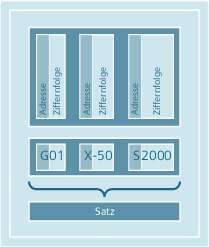

Ein NC-Programm besteht aus einer Folge von NC-Sätzen. Jeder Satz enthält die Daten zur Ausführung eines Arbeitsschritts bei der Werkstückbearbeitung.
NC-Sätze bestehen aus folgenden Komponenten:
Befehle (Anweisungen) nach DIN 66025
Elemente der NC-Hochsprache
Die Befehle nach DIN 66025 bestehen aus einem Adresszeichen und einer Ziffer bzw. einer Ziffernfolge, die einen arithmetischen Wert darstellt.
Adresszeichen (Adresse)
Das Adresszeichen (im Allgemeinen ein Buchstabe) definiert die Bedeutung des Befehls.
Beispiele:
Adresszeichen | Bedeutung |
G | G-Befehl (Wegbedingung) |
X | Weginformation für Achse X |
S | Spindeldrehzahl |
Ziffernfolge
Die Ziffernfolge ist der dem Adresszeichen zugewiesene Wert. Die Ziffernfolge kann Vorzeichen und Dezimalpunkt beinhalten, wobei ein Vorzeichen immer zwischen dem Adressbuchstaben und der Ziffernfolge steht. Positive Vorzeichen (+) und führende Nullen (0) müssen nicht geschrieben werden.
Da der Befehlssatz nach DIN 66025 für die Programmierung der komplexen Bearbeitungsabläufe in modernen Werkzeugmaschinen nicht mehr ausreichend ist, wurde er um die Elemente der NC-Hochsprache erweitert.
Dazu gehören u. a.:
Befehle der NC-Hochsprache
Im Unterschied zu den Befehlen nach DIN 66025 bestehen die Befehle der NC-Hochsprache aus mehreren Adressbuchstaben, z. B.:
OVR für Drehzahlkorrektur (Override)
SPOS für Spindelpositionieren
Bezeichner (definierte Namen) für:
Systemvariablen
Anwenderdefinierte Variablen
Unterprogramme
Schlüsselwörter
Sprungmarken
Makros
| Hinweis |
Ein Bezeichner muss eindeutig sein und darf nicht für verschiedene Objekte verwendet werden. |
Vergleichsoperatoren
Logische Operatoren
Rechenfunktionen
Kontrollstrukturen
Befehle können modal oder satzweise wirken:
Modal
Modal wirksame Befehle behalten mit dem programmierten Wert so lange ihre Gültigkeit (in allen Folgesätzen), bis:
unter dem gleichen Befehl ein neuer Wert programmiert wird.
ein Befehl programmiert wird, der die Wirkung des bisher gültigen Befehls aufhebt.
Satzweise
Satzweise wirksame Befehle gelten nur für den Satz, in dem sie programmiert werden.
Der letzte Satz in den Abarbeitungsreihenfolgen enthält ein spezielles Wort für das Programmende: M2, M17 bzw. M30.
Siehe auch:
Satzregeln
Wertzuweisungen
Kommentare
Ausblenden von Sätzen